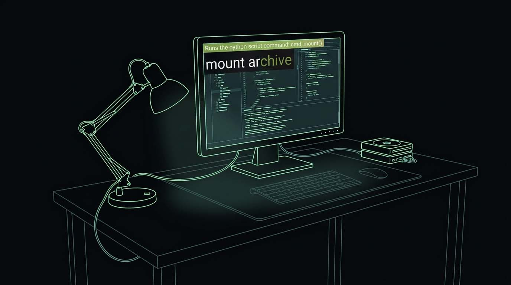

The legendary quasimodal interface returns.
Enso is a keyboard-driven application that offers an unconventional way to interact with your computer. It floats over whatever you're doing as a transparent overlay, not in a bulky window of its own.
Tap Caps Lock, and a small, unobtrusive command line appears at the top-left of the screen. As you type, it filters
through a list of short, memorable commands, such as open notepad, next track,
or reboot. The best matches appear below the input line. Use the arrow keys to move
between them and press Return to run the selected command. The interface then disappears.
A revival of the original Enso by Humanized, since 2010 it keeps that legendary feel of your fingers running the show. If you have tasted it, you can never go back.
Tap Caps Lock to summon a translucent command line, type, and hit Enter. It vanishes the moment you're done — no juggling buttons, no clicking around.
Open apps, files, folders, and bookmarks in a keystroke. Fuzzy matching gets you there before you finish typing.
Speak instead of type — Enso is able to listen for your commands, recognize them, and run them hands-free.
Uppercase, count characters, do math, or transform any highlighted text — anywhere on screen — with a single command.
Snap and resize windows or jump straight to any running app by name — maximize, minimize, and switch between windows without touching the mouse.
Every command is code. Write your own in Python and extend Enso to automate literally anything on your machine.

Enso is instantly scriptable: write a command in Python, save it, and it's ready to run the moment you type its name — no restart, no build step. Sort your commands into separate categories on the settings page to keep everything tidy, and use them to automate your computer or to control your self-made and modded devices. If you can script it, Enso can run it.
Name a Python function with the cmd_ prefix and Enso picks it up. Its arguments are the words you
type after the command name, and valid_args offers them as suggestions along the way.
Select some text anywhere, type change case title, hit Enter — and the selection is replaced
with its Title Case version.
def cmd_change_case(ensoapi, style="upper"): """Change the case of the selected text.""" text = ensoapi.get_selection().get("text", "") if not text: ensoapi.display_message("No selection!") else: ensoapi.set_selection({"text": getattr(text, style)()}) # Suggest the argument values as you type. cmd_change_case.valid_args = ["upper", "lower", "title"]